How to Apply an Oracle POC to Your PeopleTools Environment
A step-by-step walkthrough for applying an Oracle Proof of Concept patch using Change Assistant and the Environment Management Framework — including EM Hub configuration, agent setup, and validation.
What is a POC?
A POC (Proof of Concept) is Oracle's solution to a bug delivered outside the normal quality assurance cycle. It is provided with the understanding that although the fix has been unit tested by Oracle Development, it has not yet completed the rigorous QA testing that all posted fixes pass through.
Customers accepting a POC acknowledge they are receiving a fix through an atypical delivery method and may encounter problems in its content or installation. Access is provided by Oracle Support via a time-sensitive password tied to a specific Knowledge Base article.
Prerequisites
Access to My Oracle Support (MOS) with the time-sensitive password from the KB article
Change Assistant installed and accessible on your change assistant server
EM Hub and agent access to all participating app, web, and batch servers
Administrative access to PeopleTools Options in your target environment
Confirmed environment long name, short name, and system type before starting
Step 1 — Download the patch
01
Download from My Oracle Support
Log into MOS and use the time-sensitive password provided in the KB article to download the POC patch. Move the downloaded file to the downloads folder of your Change Assistant machine before proceeding.
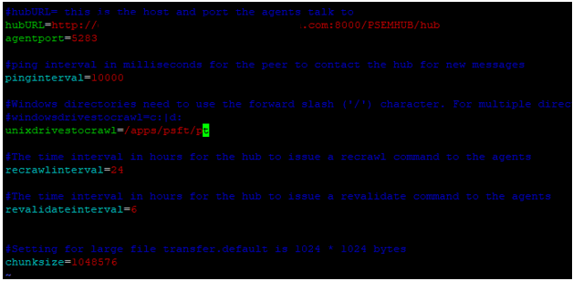
Screenshot 1 — MOS patch download screen
Step 2 — Configure EM Hub and agents
02
Configure EM Hub on all participating servers
Configure the Environment Management Hub and agents on all participating app, web, and batch servers. This is required for Change Assistant to communicate with each tier during the patch application.
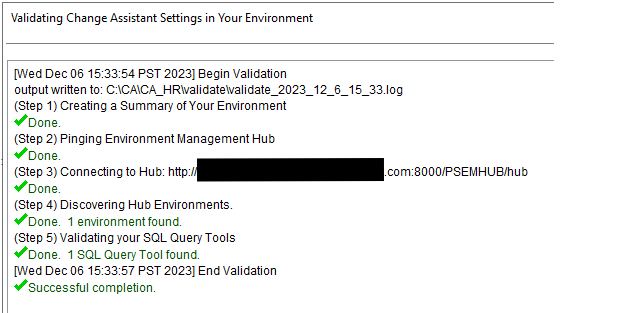
Screenshot 2 — EM Hub configuration screen
Step 3 — Web server configuration
03
Web servers act as EM Hubs by default
By default all web servers will act as EM Hubs — no additional service needs to be started. Update the following parameters in the PSEMAgent config file on each web server:
hubURL
agentport
unixdrivestocrawl
Config file location (path will vary by environment): [PS_HOME]/PSEMAgent/envmetadata/config
04
Start the EM Agent
Start the EM Agent from the PSEMAgent directory and watch for a confirmation message that says "sending pulse" — this confirms the agent is running and communicating with the hub.
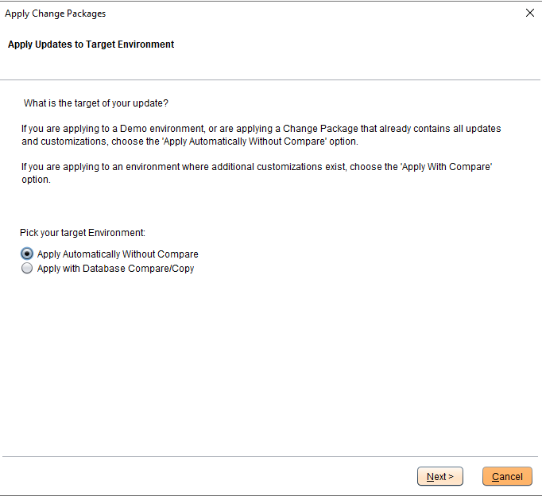
Screenshot 3 — EM Agent startup confirmation
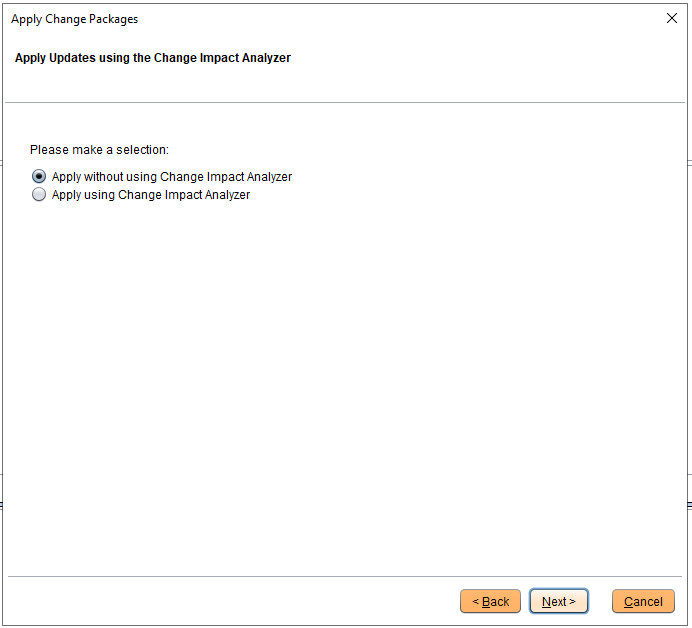
Screenshot 4 — Agent sending pulse confirmation
Step 4 — App and batch server agents
05
Update configuration.properties on app/batch servers
Update the configuration.properties file on each app and batch server. Point the crawl path to the parent folder that contains both ps_home and app_home, then start the agents on each server.
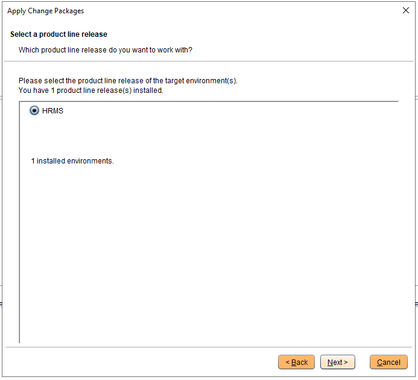
Screenshot 5 — App server agent configuration
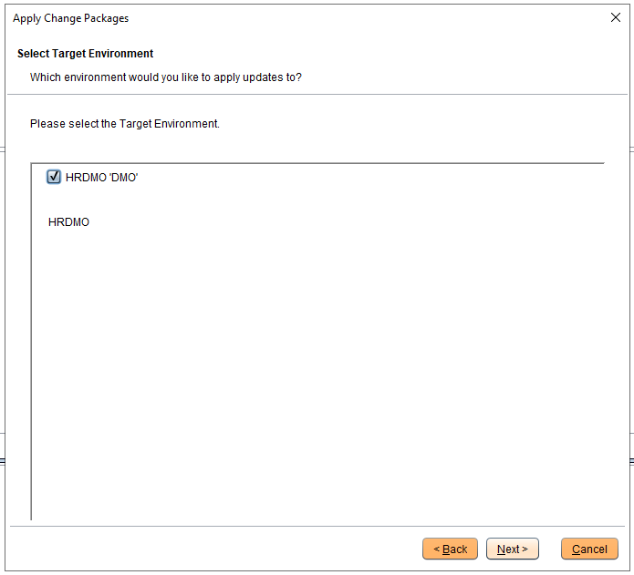
Screenshot 6 — Batch server agent configuration
Step 5 — Confirm PeopleTools Options
06
Navigate to PeopleTools Options
Log into your PeopleSoft environment through your web browser and navigate to:
Confirm the following three fields — these will appear in Change Assistant in the next step and must match exactly:
Environment Long Name
Environment Short Name
System Type
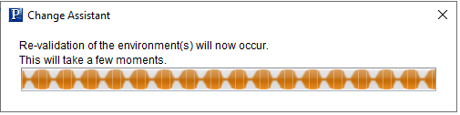
Screenshot 7 — PeopleTools Options confirmation
Step 6 — Configure Change Assistant PATH
07
Add PeopleTools paths to the PATH environment variable
On the Change Assistant server, add the following to the system PATH environment variable before launching Change Assistant. These paths are version-specific — adjust to match your installed PeopleTools version:
⚠ Remove these PATH entries after applying the POC. Leaving them in place can interfere with other Change Assistant packages and cause unexpected behavior.
Wait for the validation to complete and confirm you receive a successful response before proceeding to apply the change package.
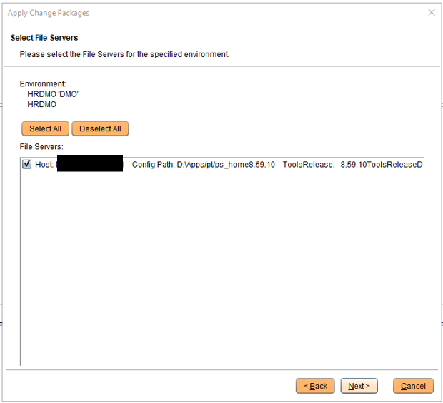
Screenshot 9 — Change Assistant EMF validation
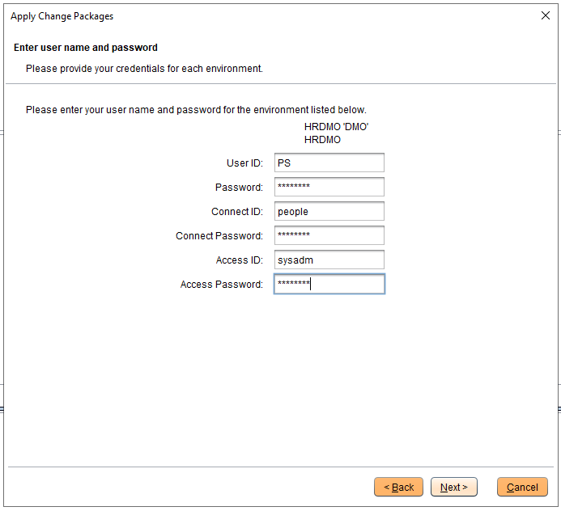
Screenshot 10 — Validation success confirmation
09
Apply the change package
Once validation is confirmed, proceed with applying the change package. Monitor each step as it runs and review any warnings or errors before proceeding to subsequent steps.
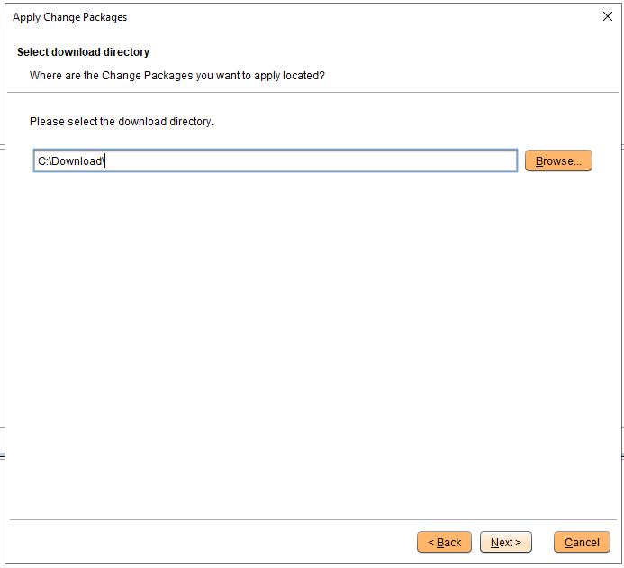
Screenshot 11 — Change package application in progress
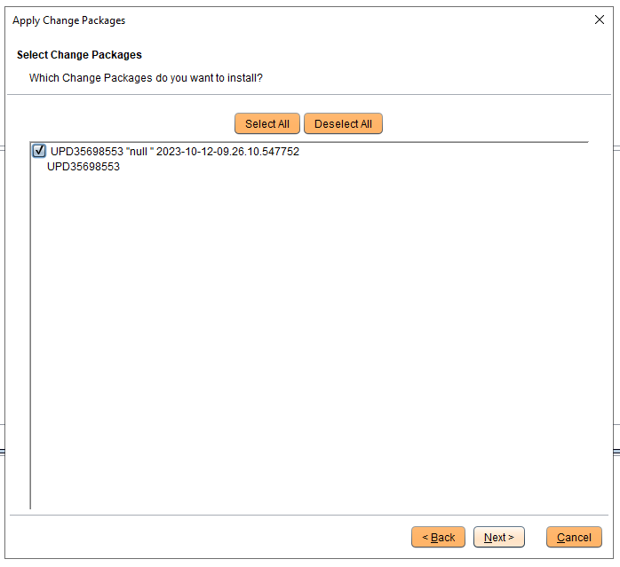
Screenshot 12 — Change package step progression
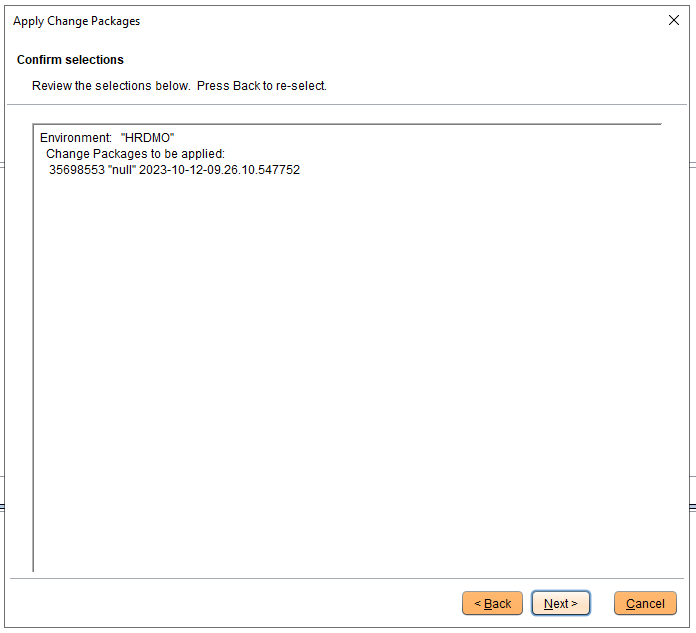
Screenshot 13 — Change package steps completing
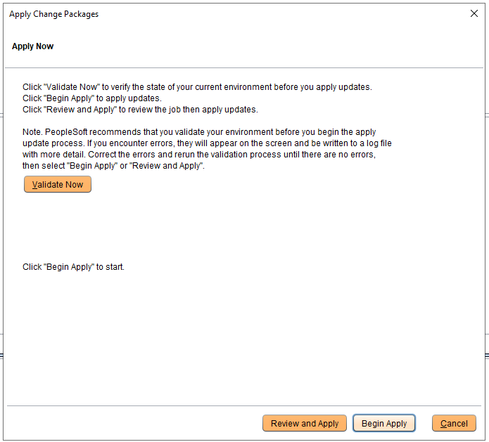
Screenshot 14 — Final steps in the application process
After successful application, remove the PeopleTools client and JRE paths that were added to the PATH environment variable in Step 6. Leaving them in place can impact other Change Assistant packages on the same server.
Always test the fix in a non-production environment first before applying to production. Document the KB article number, the time-sensitive password expiry, and the date of application for your change management records.